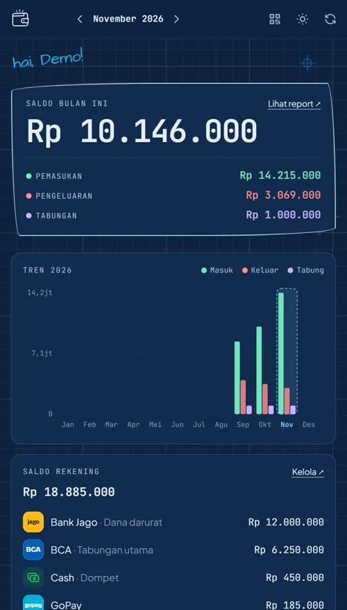
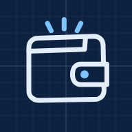
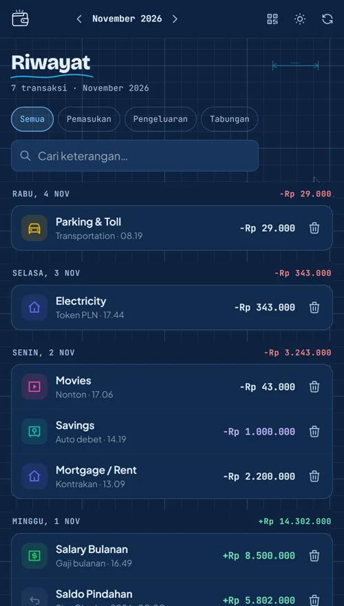
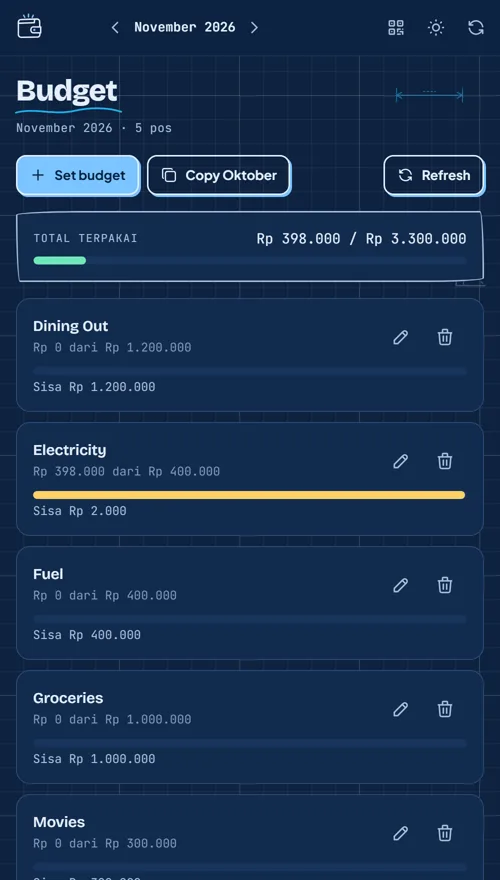
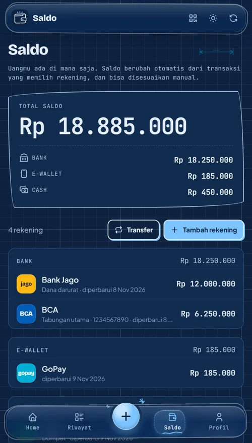
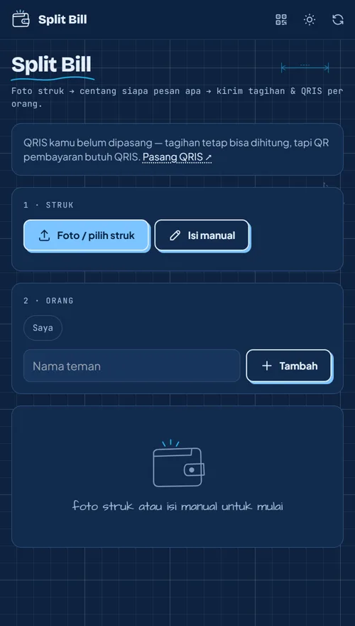
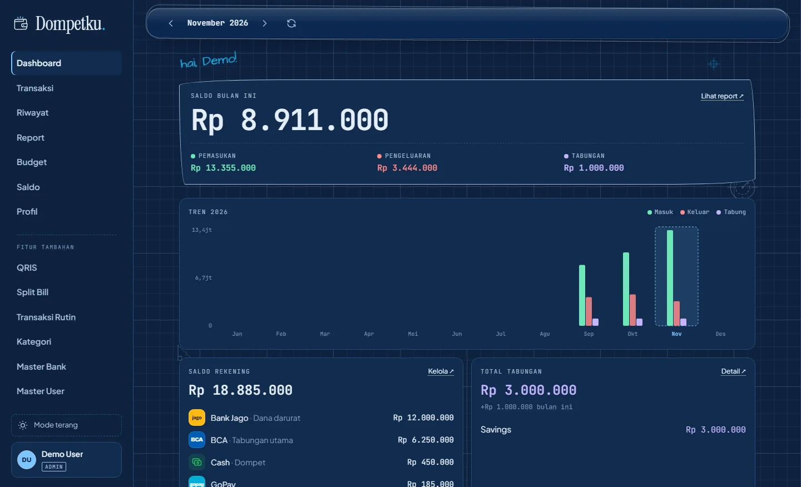
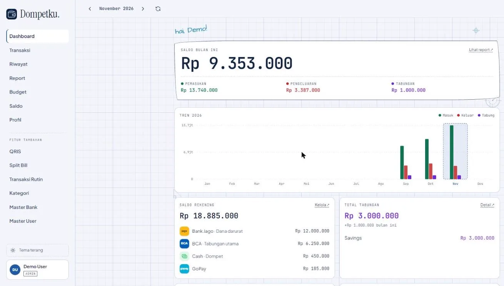
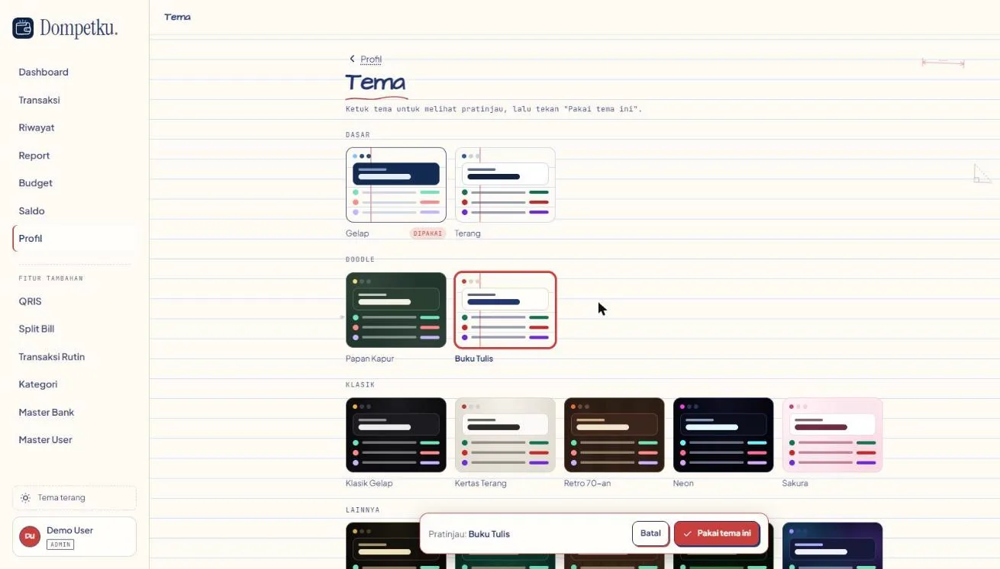

Dompetku mencatat pemasukan, pengeluaran, tabungan, dan budget bulanan. Pasang dari browser ke layar utama HP, lalu buka seperti aplikasi biasa.


Dompetku adalah Progressive Web App: web yang bisa dipasang ke HP dan terbuka layar penuh seperti aplikasi.
Muncul di samping aplikasi lain. Sekali ketuk, langsung terbuka tanpa bilah alamat browser.
Tidak perlu akun toko aplikasi dan tidak memakan banyak memori HP.
Fitur baru langsung terpasang saat aplikasi dibuka. Tidak ada tombol update.
Satu akun di semua perangkat. Tampilan menyesuaikan layar.
Kenapa bukan aplikasi Play Store? PWA dibuka dari alamat web yang sama, jadi tampilannya selalu yang terbaru di semua perangkat. Tampilan aplikasinya tetap tersimpan di HP, sehingga terbuka cepat walau sinyal lemah.
Pilih perangkatmu.
Buka dompetku9.vercel.app lewat aplikasi Chrome di HP Android.
Ketuk titik tiga ⋮ di kanan atas, lalu pilih Instal aplikasi atau Tambahkan ke layar utama.
Konfirmasi dengan Instal. Ikon Dompetku muncul di layar utama dan laci aplikasi.
Buka dompetku9.vercel.app lewat Safari. Di iPhone, pemasangan hanya bisa dari Safari.
Ketuk tombol Bagikan di bilah bawah, lalu gulir dan pilih Tambah ke Layar Utama.
Ketuk Tambah di kanan atas. Buka Dompetku dari ikon barunya di layar utama.
Buka dompetku9.vercel.app di Google Chrome atau Microsoft Edge.
Klik ikon ⊕ Instal di ujung kanan bilah alamat. Atau lewat menu ⋮ → Instal Dompetku.
Dompetku terbuka di jendela sendiri dan bisa disematkan ke taskbar atau Start.
Belum punya akun? Coba dulu mode demo, atau daftar akun.
Dibuat untuk dipakai setiap hari, bukan sekali lalu lupa.
Pemasukan, pengeluaran, dan tabungan sekilas, plus tren 12 bulan dan komposisi pengeluaran.
Atur batas belanja tiap kategori. Dompetku memberi tanda saat budget hampir habis.
Lihat berapa yang ditabung bulan ini dan total yang sudah terkumpul.
Catat saldo BCA, Jago, GoPay, OVO, dan lainnya, lengkap dengan logo masing-masing.
Foto struk, centang siapa pesan apa, lalu kirim tagihan dan QRIS per orang.
Ringkasan bulanan, budget vs aktual, dan transaksi rutin yang tercatat otomatis.





Gelap, terang, sampai buku tulis dan papan kapur. Pratinjau dulu sebelum dipakai.


Akun Dompetku dibuatkan oleh admin. Masuknya cukup dengan akun Google, tanpa password baru.
Kirim nama dan alamat Gmail yang ingin dipakai untuk login.
Admin mendaftarkan Gmail-mu, lalu mengabari lewat WhatsApp kalau sudah siap.
Buka Dompetku, ketuk Masuk dengan Google, pilih Gmail yang didaftarkan, lalu install ke HP.
Chat ke nomor ini dengan menyertakan nama dan Gmail-mu:
0896-8150-3428Mau lihat-lihat dulu? Buka mode demo, tanpa login, datanya tidak disimpan.